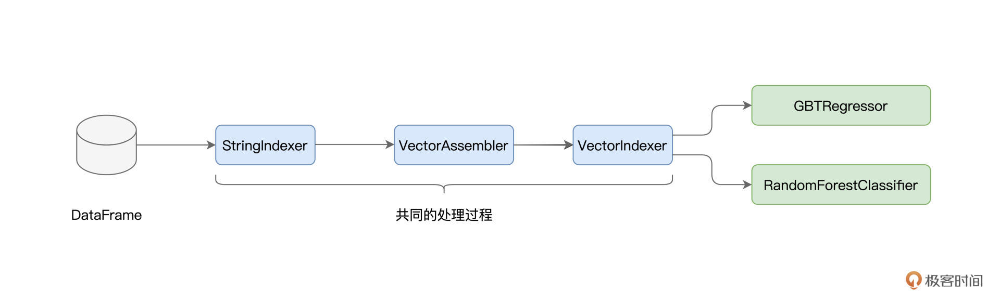
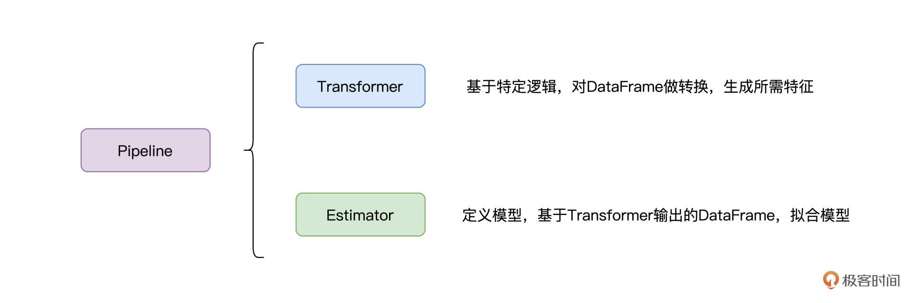
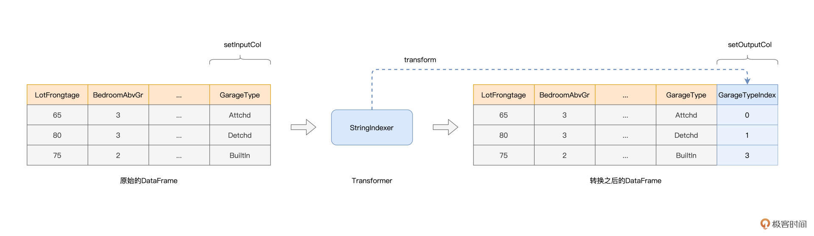

- 00 开篇词 入门Spark，你需要学会“三步走”.md.html
- 01 Spark：从“大数据的Hello World”开始.md.html
- 02 RDD与编程模型：延迟计算是怎么回事？.md.html
- 03 RDD常用算子（一）：RDD内部的数据转换.md.html
- 04 进程模型与分布式部署：分布式计算是怎么回事？.md.html
- 05 调度系统：如何把握分布式计算的精髓？.md.html
- 06 Shuffle管理：为什么Shuffle是性能瓶颈？.md.html
- 07 RDD常用算子（二）：Spark如何实现数据聚合？.md.html
- 08 内存管理：Spark如何使用内存？.md.html
- 09 RDD常用算子（三）：数据的准备、重分布与持久化.md.html
- 10 广播变量 & 累加器：共享变量是用来做什么的？.md.html
- 11 存储系统：数据到底都存哪儿了？.md.html
- 12 基础配置详解：哪些参数会影响应用程序稳定性？.md.html
- 13 Spark SQL：让我们从“小汽车摇号分析”开始.md.html
- 14 台前幕后：DataFrame与Spark SQL的由来.md.html
- 15 数据源与数据格式：DataFrame从何而来？.md.html
- 16 数据转换：如何在DataFrame之上做数据处理？.md.html
- 17 数据关联：不同的关联形式与实现机制该怎么选？.md.html
- 18 数据关联优化：都有哪些Join策略，开发者该如何取舍？.md.html
- 19 配置项详解：哪些参数会影响应用程序执行性能？.md.html
- 20 Hive + Spark强强联合：分布式数仓的不二之选.md.html
- 21 Spark UI（上）：如何高效地定位性能问题？.md.html
- 22 Spark UI（下）：如何高效地定位性能问题？.md.html
- 23 Spark MLlib：从“房价预测”开始.md.html
- 24 特征工程（上）：有哪些常用的特征处理函数？.md.html
- 25 特征工程（下）：有哪些常用的特征处理函数？.md.html
- 26 模型训练（上）：决策树系列算法详解.md.html
- 27 模型训练（中）：回归、分类和聚类算法详解.md.html
- 28 模型训练（下）：协同过滤与频繁项集算法详解.md.html
- 29 Spark MLlib Pipeline：高效开发机器学习应用.md.html
- 30 Structured Streaming：从“流动的Word Count”开始.md.html
- 31 新一代流处理框架：Batch mode和Continuous mode哪家强？.md.html
- 32 Window操作&Watermark：流处理引擎提供了哪些优秀机制？.md.html
- 33 流计算中的数据关联：流与流、流与批.md.html
- 34 Spark + Kafka：流计算中的“万金油”.md.html
- 用户故事 小王：保持空杯心态，不做井底之蛙.md.html
- 结束语 进入时间裂缝，持续学习.md.html
- 捐赠
29 Spark MLlib Pipeline：高效开发机器学习应用
你好，我是吴磊。
前面我们一起学习了如何在Spark MLlib框架下做特征工程与模型训练。不论是特征工程，还是模型训练，针对同一个机器学习问题，我们往往需要尝试不同的特征处理方法或是模型算法。
结合之前的大量实例，细心的你想必早已发现，针对同一问题，不同的算法选型在开发的过程中，存在着大量的重复性代码。
以GBDT和随机森林为例，它们处理数据的过程是相似的，原始数据都是经过StringIndexer、VectorAssembler和VectorIndexer这三个环节转化为训练样本，只不过GBDT最后用GBTRegressor来做回归，而随机森林用RandomForestClassifier来做分类。

不仅如此，在之前验证模型效果的时候我们也没有闭环，仅仅检查了训练集上的拟合效果，并没有在测试集上进行推理并验证。如果我们尝试去加载新的测试数据集，那么所有的特征处理过程，都需要在测试集上重演一遍。无疑，这同样会引入大量冗余的重复代码。
那么，有没有什么办法，能够避免上述的重复开发，让Spark MLlib框架下的机器学习开发更加高效呢？答案是肯定的，今天这一讲，我们就来说说Spark MLlib Pipeline，看看它如何帮助开发者大幅提升机器学习应用的开发效率。
Spark MLlib Pipeline
什么是Spark MLlib Pipeline呢？简单地说，Pipeline是一套基于DataFrame的高阶开发API，它让开发者以一种高效的方式，来打造端到端的机器学习流水线。这么说可能比较抽象，我们不妨先来看看，Pipeline都有哪些核心组件，它们又提供了哪些功能。
Pipeline的核心组件有两类，一类是Transformer，我们不妨把它称作“转换器”，另一类是Estimator，我把它叫作“模型生成器”。我们之前接触的各类特征处理函数，实际上都属于转换器，比如StringIndexer、MinMaxScaler、Bucketizer、VectorAssembler，等等。而前面3讲提到的模型算法，全部都是Estimator。

Transformer
我们先来说说Transformer，数据转换器。在形式上，Transformer的输入是DataFrame，输出也是DataFrame。结合特定的数据处理逻辑，Transformer基于原有的DataFrame数据列，去创建新的数据列，而新的数据列中，往往包含着不同形式的特征。
以StringIndexer为例，它的转换逻辑很简单，就是把字符串转换为数值。在创建StringIndexer实例的时候，我们需要使用setInputCol(s)和setOutputCol(s)方法，来指定原始数据列和期待输出的数据列，而输出数据列中的内容就是我们需要的特征，如下图所示。

结合图示可以看到，Transformer消费原有DataFrame的数据列，然后把生成的数据列再追加到该DataFrame，就会生成新的DataFrame。换句话说，Transformer并不是“就地”（Inline）修改原有的DataFrame，而是基于它去创建新的DataFrame。
实际上，每个Transformer都实现了setInputCol(s)和setOutputCol(s)这两个（接口）方法。除此之外，Transformer还提供了transform接口，用于封装具体的转换逻辑。正是基于这些核心接口，Pipeline才能把各式各样的Transformer拼接在一起，打造出了特征工程流水线。
一般来说，在一个机器学习应用中，我们往往需要多个Transformer来对数据做各式各样的转换，才能生成所需的训练样本。在逻辑上，多个基于同一份原始数据生成的、不同“版本”数据的DataFrame，它们会同时存在于系统中。
不过，受益于Spark的惰性求值（Lazy Evaluation）设计，应用在运行时并不会出现多份冗余数据重复占用内存的情况。
不过，为了开发上的遍历，我们还是会使用var而不是用val来命名原始的DataFrame。原因很简单，如果用val的话，我们需要反复使用新的变量名，来命名新生成的DataFrame。关于这部分开发小细节，你可以通过回顾[上一讲]的代码来体会。
Estimator
接下来，我们来说说Estimator。相比Transformer，Estimator要简单得多，它实际上就是各类模型算法，如GBDT、随机森林、线性回归，等等。Estimator的核心接口，只有一个，那就是fit，中文可以翻译成“拟合”。
Estimator的作用，就是定义模型算法，然后通过拟合DataFrame所囊括的训练样本，来生产模型（Models）。这也是为什么我把Estimator称作是“模型生成器”。
不过，有意思的是，虽然模型算法是Estimator，但是Estimator生产的模型，却是不折不扣的Transformer。
要搞清楚为什么模型是Transformer，我们得先弄明白模型到底是什么。所谓机器学习模型，它本质上就是一个参数（Parameters，又称权重，Weights）矩阵，外加一个模型结构。模型结构与模型算法有关，比如决策树结构、GBDT结构、神经网络结构，等等。
模型的核心用途就是做推断（Inference）或者说预测。给定数据样本，模型可以推断房价、推断房屋类型，等等。在Spark MLlib框架下，数据样本往往是由DataFrame封装的，而模型推断的结果，还是保存在（新的）DataFrame中，结果的默认列名是“predictions”。
其实基于训练好的推理逻辑，通过增加“predictions”列，把一个DataFrame转化成一个新的DataFrame，这不就是Transformer在做的事情吗？而这，也是为什么在模型算法上，我们调用的是fit方法，而在做模型推断时，我们在模型上调用的是transform方法。
构建Pipeline
好啦，了解了Transformer和Estimator之后，我们就可以基于它们去构建Pipeline，来打造端到端的机器学习流水线。实际上，一旦Transformer、Estimator准备就绪，定义Pipeline只需一行代码就可以轻松拿下，如下所示。
import org.apache.spark.ml.Pipeline
// 像之前一样，定义各种特征处理对象与模型算法
val stringIndexer = _
val vectorAssembler = _
val vectorIndexer = _
val gbtRegressor = _
// 将所有的Transformer、Estimator依序放入数组
val stages = Array(stringIndexer, vectorAssembler, vectorIndexer, gbtRegressor)
// 定义Spark MLlib Pipeline
val newPipeline = new Pipeline()
.setStages(stages)
可以看到，要定义Pipeline，只需创建Pipeline实例，然后把之前定义好的Transformer、Estimator纷纷作为参数，传入setStages方法即可。需要注意的是，一个Pipeline可以包含多个Transformer和Estimator，不过，Pipeline的最后一个环节，必须是Estimator，切记。
到此为止，Pipeline的作用、定义以及核心组件，我们就讲完了。不过，你可能会说：“概念是讲完了，不过我还是不知道Pipeline具体怎么用，以及它到底有什么优势？”别着急，光说不练假把式，接下来，我们就结合GBDT与随机森林的例子，来说说Pipeline的具体用法，以及怎么用它帮你大幅度提升开发效率。
首先，我们来看看，在一个机器学习应用中，Pipeline如何帮助我们提高效率。在上一讲，我们用GBDT来拟合房价，并给出了代码示例。
现在，咱们把代码稍微调整一下，用Spark MLlib Pipeline来实现模型训练。第一步，我们还是先从文件创建DataFrame，然后把数值型字段与非数值型字段区分开，如下所示。
import org.apache.spark.sql.DataFrame
// rootPath为房价预测数据集根目录
val rootPath: String = _
val filePath: String = s"${rootPath}/train.csv"
// 读取文件，创建DataFrame
var engineeringDF: DataFrame = spark.read.format("csv").option("header", true).load(filePath)
// 所有数值型字段
val numericFields: Array[String] = Array("LotFrontage", "LotArea", "MasVnrArea", "BsmtFinSF1", "BsmtFinSF2", "BsmtUnfSF", "TotalBsmtSF", "1stFlrSF", "2ndFlrSF", "LowQualFinSF", "GrLivArea", "BsmtFullBath", "BsmtHalfBath", "FullBath", "HalfBath", "BedroomAbvGr", "KitchenAbvGr", "TotRmsAbvGrd", "Fireplaces", "GarageCars", "GarageArea", "WoodDeckSF", "OpenPorchSF", "EnclosedPorch", "3SsnPorch", "ScreenPorch", "PoolArea")
// Label字段
val labelFields: Array[String] = Array("SalePrice")
import org.apache.spark.sql.types.IntegerType
for (field <- (numericFields ++ labelFields)) {
engineeringDF = engineeringDF
.withColumn(s"${field}Int",col(field).cast(IntegerType))
.drop(field)
}
数据准备好之后，接下来，我们就可以开始着手，为Pipeline的构建打造零件：依次定义转换器Transformer和模型生成器Estimator。在上一讲，我们用StringIndexer把非数值字段转换为数值字段，这一讲，咱们也依法炮制。
import org.apache.spark.ml.feature.StringIndexer
// 所有非数值型字段
val categoricalFields: Array[String] = Array("MSSubClass", "MSZoning", "Street", "Alley", "LotShape", "LandContour", "Utilities", "LotConfig", "LandSlope", "Neighborhood", "Condition1", "Condition2", "BldgType", "HouseStyle", "OverallQual", "OverallCond", "YearBuilt", "YearRemodAdd", "RoofStyle", "RoofMatl", "Exterior1st", "Exterior2nd", "MasVnrType", "ExterQual", "ExterCond", "Foundation", "BsmtQual", "BsmtCond", "BsmtExposure", "BsmtFinType1", "BsmtFinType2", "Heating", "HeatingQC", "CentralAir", "Electrical", "KitchenQual", "Functional", "FireplaceQu", "GarageType", "GarageYrBlt", "GarageFinish", "GarageQual", "GarageCond", "PavedDrive", "PoolQC", "Fence", "MiscFeature", "MiscVal", "MoSold", "YrSold", "SaleType", "SaleCondition")
// StringIndexer期望的输出列名
val indexFields: Array[String] = categoricalFields.map(_ + "Index").toArray
// 定义StringIndexer实例
val stringIndexer = new StringIndexer()
// 批量指定输入列名
.setInputCols(categoricalFields)
// 批量指定输出列名，输出列名与输入列名，必须要一一对应
.setOutputCols(indexFields)
.setHandleInvalid("keep")
在上一讲，定义完StringIndexer实例之后，我们立即拿它去对engineeringDF做转换。不过在构建Pipeline的时候，我们不需要这么做，只需要把这个“零件”定义好即可。接下来，我们来打造下一个零件：VectorAssembler。
import org.apache.spark.ml.feature.VectorAssembler
// 转换为整型的数值型字段
val numericFeatures: Array[String] = numericFields.map(_ + "Int").toArray
val vectorAssembler = new VectorAssembler()
/** 输入列为：数值型字段 + 非数值型字段
注意，非数值型字段的列名，要用indexFields，
而不能用原始的categoricalFields，不妨想一想为什么？
*/
.setInputCols(numericFeatures ++ indexFields)
.setOutputCol("features")
.setHandleInvalid("keep")
与上一讲相比，VectorAssembler的定义并没有什么两样。
下面，我们继续来打造第三个零件：VectorIndexer，它用于帮助模型算法区分连续特征与离散特征。
import org.apache.spark.ml.feature.VectorIndexer
val vectorIndexer = new VectorIndexer()
// 指定输入列
.setInputCol("features")
// 指定输出列
.setOutputCol("indexedFeatures")
// 指定连续、离散判定阈值
.setMaxCategories(30)
.setHandleInvalid("keep")
到此为止，Transformer就全部定义完了，原始数据经过StringIndexer、VectorAssembler和VectorIndexer的转换之后，会生成新的DataFrame。在这个最新的DataFrame中，会有多个由不同Transformer生成的数据列，其中“indexedFeatures”列包含的数据内容即是特征向量。
结合DataFrame一路携带过来的“SalePriceInt”列，特征向量与预测标的终于结合在一起了，就是我们常说的训练样本。有了训练样本，接下来，我们就可以着手定义Estimator。
import org.apache.spark.ml.regression.GBTRegressor
val gbtRegressor = new GBTRegressor()
// 指定预测标的
.setLabelCol("SalePriceInt")
// 指定特征向量
.setFeaturesCol("indexedFeatures")
// 指定决策树的数量
.setMaxIter(30)
// 指定决策树的最大深度
.setMaxDepth(5)
好啦，到这里，Pipeline所需的零件全部打造完毕，零件就位，只欠组装。我们需要通过Spark MLlib提供的“流水线工艺”，把所有零件组装成Pipeline。
import org.apache.spark.ml.Pipeline
val components = Array(stringIndexer, vectorAssembler, vectorIndexer, gbtRegressor)
val pipeline = new Pipeline()
.setStages(components)
怎么样，是不是很简单？接下来的问题是，有了Pipeline，我们都能用它做些什么呢？
// Pipeline保存地址的根目录
val savePath: String = _
// 将Pipeline物化到磁盘，以备后用（复用）
pipeline.write
.overwrite()
.save(s"${savePath}/unfit-gbdt-pipeline")
// 划分出训练集和验证集
val Array(trainingData, validationData) = engineeringDF.randomSplit(Array(0.7, 0.3))
// 调用fit方法，触发Pipeline计算，并最终拟合出模型
val pipelineModel = pipeline.fit(trainingData)
首先，我们可以把Pipeline保存下来，以备后用，至于怎么复用，我们待会再说。再者，把之前准备好的训练样本，传递给Pipeline的fit方法，即可触发整条Pipeline从头至尾的计算逻辑，从各式各样的数据转换，到最终的模型训练，一步到位。- Pipeline fit方法的输出结果，即是训练好的机器学习模型。我们最开始说过，模型也是Transformer，它可以用来推断预测结果。
看到这里，你可能会说：“和之前的代码实现相比，Pipeline也没有什么特别之处，无非是用Pipeline API把之前的环节拼接起来而已”。其实不然，基于构建好的Pipeline，我们可以在不同范围对其进行复用。对于机器学习应用来说，我们既可以在作业内部实现复用，也可以在作业之间实现复用，从而大幅度提升开发效率。
作业内的代码复用
在之前的模型训练过程中，我们仅仅在训练集与验证集上评估了模型效果。实际上，在工业级应用中，我们最关心的，是模型在测试集上的泛化能力。就拿Kaggle竞赛来说，对于每一个机器学习项目，Kaggle都会同时提供train.csv和test.csv两个文件。
其中train.csv是带标签的，用于训练模型，而test.csv是不带标签的。我们需要对test.csv中的数据做推断，然后把预测结果提交到Kaggle线上平台，平台会结合房屋的实际价格来评判我们的模型，到那时我们才能知道，模型对于房价的预测到底有多准（或是有多不准）。
要完成对test.csv的推断，我们需要把原始数据转换为特征向量，也就是把“粗粮”转化为“细粮”，然后才能把它“喂给”模型。
在之前的代码实现中，要做到这一点，我们必须把之前加持到train.csv的所有转换逻辑都重写一遍，比如StringIndexer、VectorAssembler和VectorIndexer。毫无疑问，这样的开发方式是极其低效的，更糟的是，手工重写很容易会造成测试样本与训练样本不一致，而这样的不一致是机器学习应用中的大忌。
不过，有了Pipeline，我们就可以省去这些麻烦。首先，我们把test.csv加载进来并创建DataFrame，然后把数值字段从String转为Int。
import org.apache.spark.sql.DataFrame
val rootPath: String = _
val filePath: String = s"${rootPath}/test.csv"
// 加载test.csv，并创建DataFrame
var testData: DataFrame = spark.read.format("csv").option("header", true).load(filePath)
// 所有数值型字段
val numericFields: Array[String] = Array("LotFrontage", "LotArea", "MasVnrArea", "BsmtFinSF1", "BsmtFinSF2", "BsmtUnfSF", "TotalBsmtSF", "1stFlrSF", "2ndFlrSF", "LowQualFinSF", "GrLivArea", "BsmtFullBath", "BsmtHalfBath", "FullBath", "HalfBath", "BedroomAbvGr", "KitchenAbvGr", "TotRmsAbvGrd", "Fireplaces", "GarageCars", "GarageArea", "WoodDeckSF", "OpenPorchSF", "EnclosedPorch", "3SsnPorch", "ScreenPorch", "PoolArea")
// 所有非数值型字段
val categoricalFields: Array[String] = Array("MSSubClass", "MSZoning", "Street", "Alley", "LotShape", "LandContour", "Utilities", "LotConfig", "LandSlope", "Neighborhood", "Condition1", "Condition2", "BldgType", "HouseStyle", "OverallQual", "OverallCond", "YearBuilt", "YearRemodAdd", "RoofStyle", "RoofMatl", "Exterior1st", "Exterior2nd", "MasVnrType", "ExterQual", "ExterCond", "Foundation", "BsmtQual", "BsmtCond", "BsmtExposure", "BsmtFinType1", "BsmtFinType2", "Heating", "HeatingQC", "CentralAir", "Electrical", "KitchenQual", "Functional", "FireplaceQu", "GarageType", "GarageYrBlt", "GarageFinish", "GarageQual", "GarageCond", "PavedDrive", "PoolQC", "Fence", "MiscFeature", "MiscVal", "MoSold", "YrSold", "SaleType", "SaleCondition")
import org.apache.spark.sql.types.IntegerType
// 注意，test.csv没有SalePrice字段，也即没有Label
for (field <- (numericFields)) {
testData = testData
.withColumn(s"${field}Int",col(field).cast(IntegerType))
.drop(field)
}
接下来，我们只需要调用Pipeline Model的transform方法，就可以对测试集做推理。还记得吗？模型是Transformer，而transform是Transformer用于数据转换的统一接口。
val predictions = pipelineModel.transform(testData)
有了Pipeline，我们就可以省去StringIndexer、VectorAssembler这些特征处理函数的重复定义，在提升开发效率的同时，消除样本不一致的隐患。除了在同一个作业内部复用Pipeline之外，我们还可以在不同的作业之间对其进行复用，从而进一步提升开发效率。
作业间的代码复用
对于同一个机器学习问题，我们往往会尝试不同的模型算法，以期获得更好的模型效果。例如，对于房价预测，我们既可以用GBDT，也可以用随机森林。不过，尽管模型算法不同，但是它们的训练样本往往是类似的，甚至是完全一样的。如果每尝试一种模型算法，就需要从头处理一遍数据，这未免过于低效，也容易出错。
有了Pipeline，我们就可以把算法选型这件事变得异常简单。还是拿房价预测来举例，之前我们尝试使用GBTRegressor来训练模型，这一次，咱们来试试RandomForestRegressor，也即使用随机森林来解决回归问题。按照惯例，我们还是结合代码来进行讲解。
import org.apache.spark.ml.Pipeline
val savePath: String = _
// 加载之前保存到磁盘的Pipeline
val unfitPipeline = Pipeline.load(s"${savePath}/unfit-gbdt-pipeline")
// 获取Pipeline中的每一个Stage（Transformer或Estimator）
val formerStages = unfitPipeline.getStages
// 去掉Pipeline中最后一个组件，也即Estimator：GBTRegressor
val formerStagesWithoutModel = formerStages.dropRight(1)
import org.apache.spark.ml.regression.RandomForestRegressor
// 定义新的Estimator：RandomForestRegressor
val rf = new RandomForestRegressor()
.setLabelCol("SalePriceInt")
.setFeaturesCol("indexedFeatures")
.setNumTrees(30)
.setMaxDepth(5)
// 将老的Stages与新的Estimator拼接在一起
val stages = formerStagesWithoutModel ++ Array(rf)
// 重新定义新的Pipeline
val newPipeline = new Pipeline()
.setStages(stages)
首先，我们把之前保存下来的Pipeline，重新加载进来。然后，用新的RandomForestRegressor替换原来的GBTRegressor。最后，再把原有的Stages和新的Estimator拼接在一起，去创建新的Pipeline即可。接下来，只要调用fit方法，就可以触发新Pipeline的运转，并最终拟合出新的随机森林模型。
// 像之前一样，从train.csv创建DataFrame，准备数据
var engineeringDF = _
val Array(trainingData, testData) = engineeringDF.randomSplit(Array(0.7, 0.3))
// 调用fit方法，触发Pipeline运转，拟合新模型
val pipelineModel = newPipeline.fit(trainingData)
可以看到，短短的几行代码，就可以让我们轻松地完成模型选型。到此，Pipeline在开发效率与容错上的优势，可谓一览无余。
重点回顾
今天的内容就讲完啦，今天这一讲，我们一起学习了Spark MLlib Pipeline。你需要理解Pipeline的优势所在，并掌握它的核心组件与具体用法。Pipeline的核心组件是Transformer与Estimator。
其中，Transformer完成从DataFrame到DataFrame的转换，基于固有的转换逻辑，生成新的数据列。Estimator主要是模型算法，它基于DataFrame中封装的训练样本，去生成机器学习模型。将若干Transformer与Estimator拼接在一起，通过调用Pipeline的setStages方法，即可完成Pipeline的创建。
Pipeline的核心优势在于提升机器学习应用的开发效率，并同时消除测试样本与训练样本之间不一致这一致命隐患。Pipeline可用于作业内的代码复用，或是作业间的代码复用。
在同一作业内，Pipeline能够轻松地在测试集之上，完成数据推断。而在作业之间，开发者可以加载之前保存好的Pipeline，然后用“新零件”替换“旧零件”的方式，在复用大部分处理逻辑的同时，去打造新的Pipeline，从而实现高效的模型选型过程。
在今后的机器学习开发中，我们要充分利用Pipeline提供的优势，来降低开发成本，从而把主要精力放在特征工程与模型调优上。
到此为止，Spark MLlib模块的全部内容，我们就讲完了。
在这个模块中，我们主要围绕着特征工程、模型训练和机器学习流水线等几个方面，梳理了Spark MLlib子框架为开发者提供的种种能力。换句话说，我们知道了Spark MLlib能做哪些事情、擅长做哪些事情。如果我们能够做到对这些能力了如指掌，在日常的机器学习开发中，就可以灵活地对其进行取舍，从而去应对不断变化的业务需求，加油！
每日一练
我们今天一直在讲Pipeline的优势，你能说一说，Pipeline有哪些可能的劣势吗？
欢迎你在留言区和我交流互动，也推荐你把这一讲分享给更多同事、朋友，说不定就能让他进一步理解Pipeline。
© 2019 - 2023 Liangliang Lee. Powered by gin and hexo-theme-book.